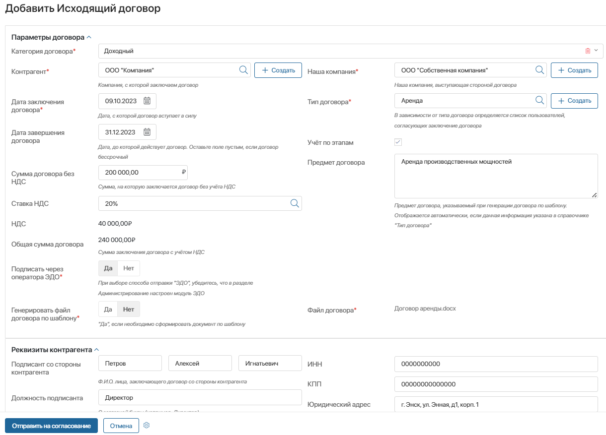
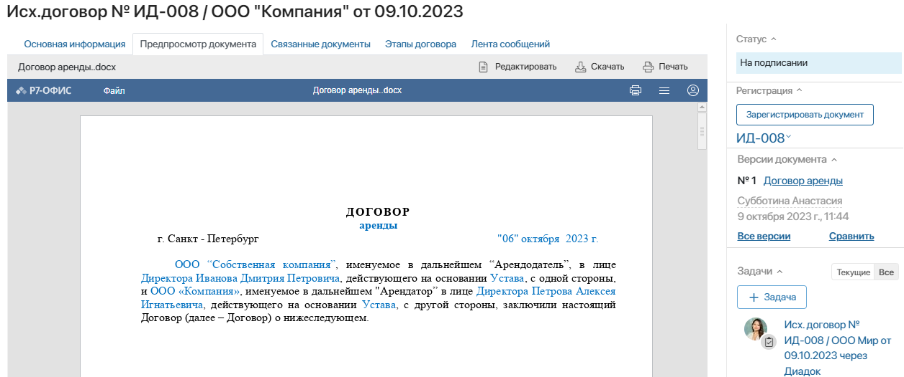
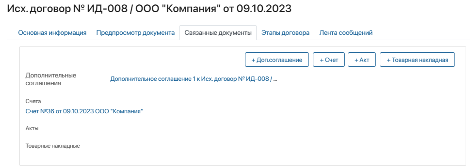
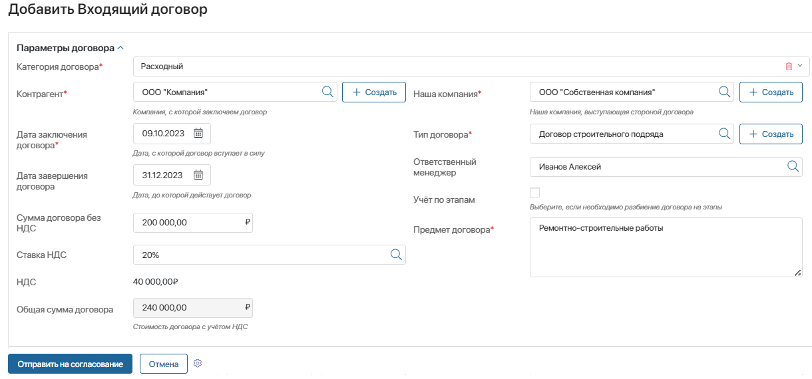
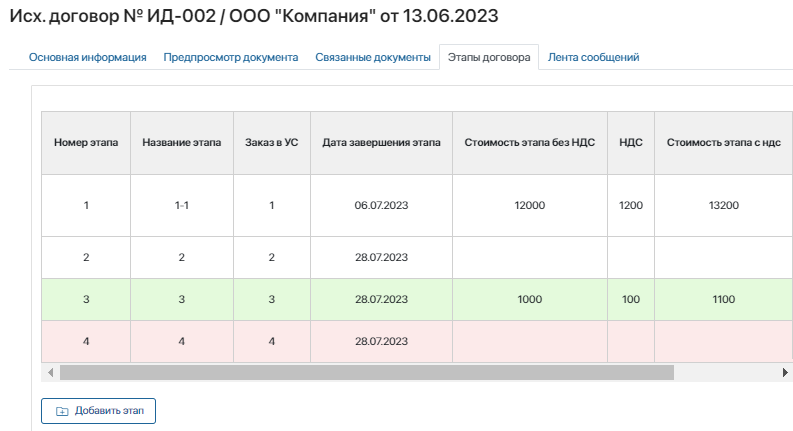
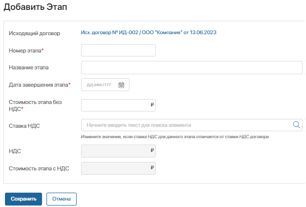
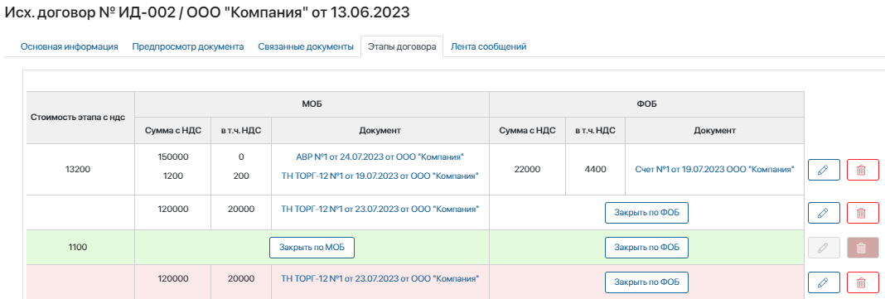

Рассмотрим работу с решением на примере обработки исходящих договоров. Остальные приложения в составе решения работают похожим образом и настраиваются аналогично приложению Исходящие договоры.
Приложение «Исходящие договоры»
С помощью приложения Исходящие договоры можно организовать полный цикл формирования, согласования и подписания исходящих договоров на предприятии. Преднастроенный бизнес-процесс позволяет автоматически генерировать исходящие договоры по шаблону.
Чтобы создать новый договор в системе:
- Перейдите в приложение Исходящие договоры.
- В правом верхнем углу нажмите кнопку Добавить исходящий договор.
- Выберите категорию договора: Доходный, Расходный или Прочий.

- Заполните открывшуюся форму: выберите контрагента, собственную компанию, тип договора, укажите дату заключения и завершения договора, сумму без НДС, ставку НДС. Сумма налога рассчитается автоматически. Также необходимо выбрать опции: Подписать через Диадок и Генерировать файл договора по шаблону.
- Если по договору предусматривается поэтапное закрытие обязательств, включите опцию Учёт по этапам. Обратите внимание, при выборе варианта Учёт по этапам заполнение этапов в карточке договора становится обязательным.
Остальные реквизиты договора заполняются автоматически с возможностью редактирования: предмет договора заполняется из карточки типа Договора, реквизиты контрагента — из карточки контрагента. Если вариант генерации договора по шаблону не выбран, на карточке договора появляется поле Файл договора, в которое необходимо вложить файл договора, отправляемого на согласование.

- Если договор формируется по шаблону, файл договора создаётся в системе в ходе бизнес-процесса и прикрепляется к карточке договора. Реквизиты контрагента, нашей компании, параметры договора, включая предмет договора, подставляются в текст автоматически. Должность и имя подписанта просклоняются по падежам при помощи сервиса Морфер.
- После заполнения всех полей в левом нижнем углу нажмите кнопку Отправить на согласование. Карточка договора сохранится, и будет запущен связанный с ним бизнес-процесс Заключение доходного договора, в ходе которого документ будет согласован, подписан и отправлен контрагенту.
Заключение доходного договора
После создания договора осуществляется постановка задач:
- инициатору подписания договора — проверить файл договора, сгенерированного по шаблону, если выбрана эта опция;
- делопроизводителю — зарегистрировать договор;
- руководителю инициатора подписания договора — согласовать договор;
- дополнительным согласующим — согласовать договор. Список согласующих определяется типом договора из соответствующего справочника.
Затем в зависимости от выбранного способа подписания договора при его создании запускается дочерний процесс: Отправка договора через Диадок либо Отправка бумажной версии.
В бизнес-процессе Отправка бумажной версии участником назначаются следующие задачи:
- делопроизводителю — распечатать договор и передать его на подпись;
- подписанту, указанному в карточке нашей компании, которая выступает стороной договора — подписать договор;
- делопроизводителю — отправить оригиналы договора контрагенту, указать предположительную дату возврата оригинала. В случае отправки Почтой России либо курьерской службой требуется указать трек-номер отправления или ссылку на страницу отслеживания посылки. Адреса и контактные данные для отправки отобразятся в карточке автоматически. Информация будет получена из карточек контрагента и нашей компании.
В бизнес-процессе Отправка договора через Диадок сотруднику с правом отправки документов через Диадок, то есть пользователю с действующей учётной записью в Диадок и квалифицированной электронной подписью, придёт задача отправить договор через Диадок.
После того как контрагент подпишет договор через Диадок, статус документа сменится и будет передан в систему. Сотруднику с правом отправки документов через Диадок придёт оповещение о подписании договора контрагентом. В систему автоматически будет загружена печатная версия документа, обрабатываемого через Диадок, в формате .pdf.
На каждой странице документа будет проставлен синий штамп, в котором указывается станица документа, время подписания и идентификатор. На последней странице будет проставлен штамп с подробной информацией о сертификате, которым документ был подписан. Подробнее об этом читайте в статье «Модуль „Диадок“».
В ходе процесса договор в соответствии с предстоящим этапом примет один из настроенных в системе статусов, а его инициатор получит сообщение о результате согласования.
При необходимости процесс можно изменить: добавить новые шаги или участников.
Дополнительные соглашения к договорам
Дополнительное соглашение можно создать из карточки договора.
Все дополнительные соглашения с приложениями, протоколы разногласий, протоколы урегулирования разногласий и прочие документы хранятся в карточке договора на вкладке Связанные документы.

Уведомление об истечении срока доходного договора
Для процесса Уведомление об истечении срока договора настроен ежедневный автоматический запуск. В ходе этого процесса за 30 дней до истечения срока действия договора автору его создания отправляется уведомление.
Автор может принять решение о дальнейших действиях и поставить задачи ответственным, например, пролонгировать договор, заключить новый договор, проконтролировать подписание актов в рамках договора или произвести отгрузку.
Вы можете дорабатывать процессы в соответствии с регламентами вашей компании. Например, изменить настройки запуска, добавить или удалить операции, участников и т. д. Подробнее об этом читайте в разделе «Адаптация решения под ваши потребности».
Другие приложения решения
В состав решения Управление договорами также входят приложения Исходящие счета, Исходящие акты выполненных работ, Исходящие товарные накладные, Входящие договоры, Входящие счета, Входящие акты выполненных работ, Входящие товарные накладные. Их настройка производится аналогично приложению Исходящие договоры.
Бизнес-процесс в приложении Исходящие акты выполненных работ, аналогично процессу в приложении Исходящие договоры, позволяет организовать формирование акта по шаблону, отправку на согласование и подписание, а затем отправку контрагенту.
В приложении Исходящие счета настроена работа по выставлению исходящих счетов, их отправке контрагенту и проверке поступления оплаты по счёту.
С помощью приложения Входящие договоры вы можете добавлять в систему входящий договор, ставить задачи регистрации делопроизводителю, отправлять зарегистрированный договор на согласование и подписание, а затем высылать контрагенту. Предусмотрены два варианта процессов: подписание входящего договора в бумажном варианте и в электронном — посредством Диадок.

В приложении Входящие акты выполненных работ реализован процесс подписания и отправки подписанного оригинала контрагенту. Как и в приложении Входящие договоры, здесь предусмотрено подписание входящего акта выполненных работ в бумажном и электронном виде.
Учёт входящих счетов и их согласование осуществляется в приложении Входящие счета. Пока счёт не будет утверждён, бухгалтеру не будет назначена задача на оплату, а сам процесс не будет завершён. После того как оплата произведена, сотруднику, отправившему счёт на согласование, придёт уведомление о совершённой операции.
Запуск процесса гарантирует, что счёт будет обработан, а оплата совершена вовремя.
Действия с этапами договора
Этап договора — отдельная стадия работ, связанная данным договором. Договор может иметь несколько этапов или ни одного.
Этапы отображаются в карточке договора на вкладке Этапы договора.

Таблица на этой вкладке содержит информацию о номере и названии этапа, датах его начала и завершения, стоимости, документах, подтверждающих исполнение материальных обязательств (МОБ) и финансовых обязательств (ФОБ).
Название закрытых этапов договора выделяется зелёным цветом, а название просроченных — красным.
Создать этап договора
Для добавления нового этапа:
- Откройте карточку договора, перейдите на вкладку Этапы договора и нажмите кнопку Добавить этап.
- В открывшемся окне заполните параметры этапа.

- введите номер и название этапа;
- если в организации решено вести позаказный учёт по договору, укажите заказ в учётной системе;
- задайте дату завершения этапа;
- укажите стоимость этапа без НДС и ставку НДС. Обратите внимание, НДС и стоимость рассчитываются автоматически;
- введите срок поставки или выполнения работ.
Изменить или удалить этап договора
Чтобы отредактировать параметры договора, в нужной ячейке таблицы с данными нажмите на значок .
При редактировании суммовых параметров итоговые данные по таблице автоматически пересчитываются. Изменить параметры можно только у незакрытого этапа.

Для удаления этапа воспользуйтесь кнопкой .
Документы, подтверждающие выполнение материальных обязательств (МОБ)
На вкладке Этапы договора в блоке МОБ выводятся первичные учётные документы — ПУД (товарные накладные, акты выполненных работ и т. д.), подтверждающие отгрузку товаров (выполнение работ, оказание услуг) по определённому договору.
При запуске процесса загрузки новых документов информация о МОБ актуализируется — ПУД автоматически прикрепляются к карточке договора и распределяются по этапам. Обратите внимание, в ПУД по договорам параметр Этап со значением Учёт по этапам является обязательным.
Также вы можете поместить ПУД в таблицу вручную с помощью кнопки Закрыть по МОБ.
Они отображаются в свойстве Этап в ПУД по договорам со значением Учёт по этапам.
Документы, подтверждающие выполнение финансовых обязательств (ФОБ)
На вкладке Этапы договора в блоке ФОБ выводятся счета на оплату, на основании которых произведена оплата товаров, работ или услуг.
При запуске процесса загрузки новых документов информация о ФОБ по этапам актуализируется. Счета со статусом Оплачен и Частично оплачен автоматически прикрепляются к карточке договора и распределяются по этапам. Обратите внимание, параметр Этап со значением Учёт по этапам является обязательным.
Закрыть этап договора
Закрытие этапа договора означает выполнение всех материальных и финансовых обязательств по данному этапу, что подтверждается закрывающими документами и оплатой.
Закрытие этапов происходит автоматически, если стоимость этапа, сумма МОБ и сумма ФОБ стали равны. Также вы можете закрыть этап вручную с помощью кнопки Закрыть этап, находясь в выбранной строке таблицы с данными по этапам.
Закрытые этапы выделяются зелёным цветом.
Этапы, МОБ и ФОБ, работы по которым не выполнены в срок, выделяются красным цветом. При этом ответственный менеджер получает уведомление о нарушении срока исполнения обязательств по этапу договора.